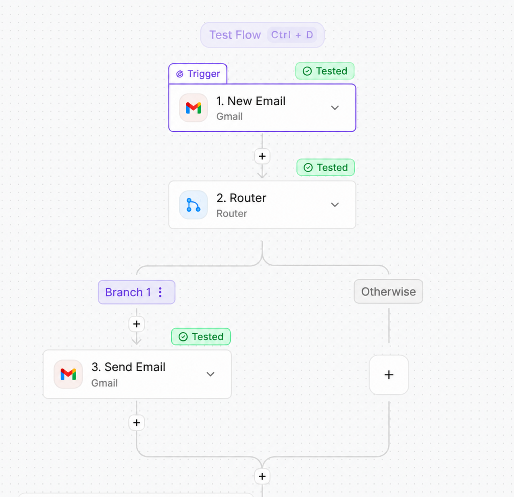
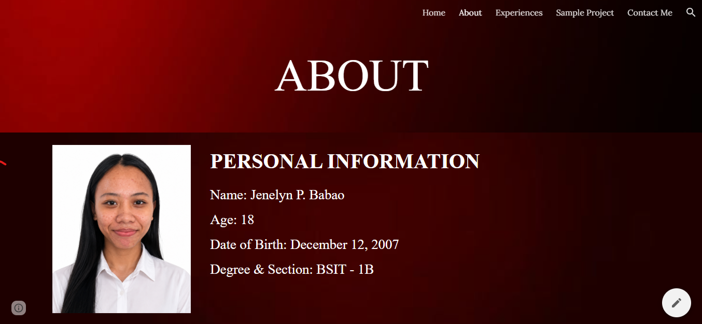
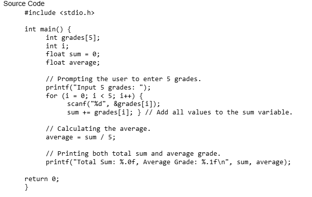

Basic Programming
Through guided exercises in my studies, I am building a solid foundation in control flow and data storage. I reinforce my understanding of how algorithms behave by conducting dry runs on paper to trace logic step by step.
Student life & Everyday Interests
A first-year Information Technology student who likes to read, write, and learn new things.
This is where I keep my class projects and the things I’m learning along the way.

StudyingBS Information Technology
PracticingHTML, CSS, & C Language
After classWalks, watch movies, & play
01 / About me
I’m Jenelyn, I am a first-year student taking up Bachelor of Science in Information Technology at Cordova Public College. Choosing to study IT was an idecisive decision, but I am happy to be here. As days pass by, I am learning to code and create websites. It was challenging at first, but I am enjoying the process of learning and improving my skills.
02 / Skills
Through guided exercises in my studies, I am building a solid foundation in control flow and data storage. I reinforce my understanding of how algorithms behave by conducting dry runs on paper to trace logic step by step.
I am proficient in structuring web pages using core HTML components—including headings, paragraphs, hyperlinks, images, lists, and tables—with a focus on selecting the appropriate semantic element for each content type.
Proficient in designing clean page layouts with CSS color schemes, spacing, Flexbox, and introductory grid structures, while building competency in mobile-first and responsive web design.
I develop code using Visual Studio Code, maintain structured project directories, and leverage browser developer tools to preview web pages and debug layout discrepancies.
03 / Projects

01 / OPT · Group Activity
This is one of our group projects in Office Productivity Tools (OPT) class where we test and create a simple gmail router.
View image preview
02 / OPT · Individual activity
A simple personal portfolio webpage with a bio and a list of skills. I used Google Sites to create this portfolio and make it accessible online.
View image preview
03 / Programming · Individual Activity
A simple code project for our Programming class where we calculate the average of the grades of the students.
View image preview04 / Contact
Feel free to reach out if you want to bounce ideas around for a class project, trade study notes, or figure out a tricky layout.
Cebu City, Philippines
First year, BS Information Technology
Cordova Public College